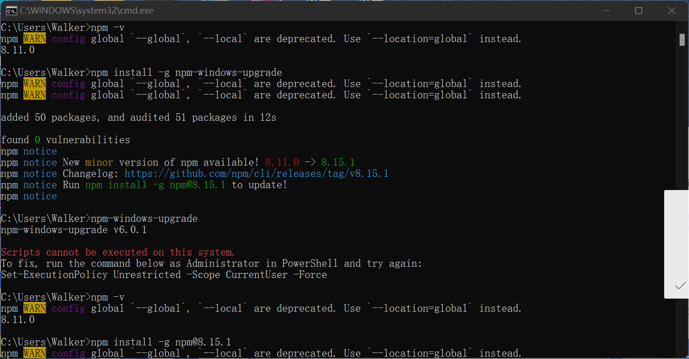

博客创建笔记
参考
https://blog.csdn.net/wapchief/article/details/54602515
https://www.bilibili.com/video/BV1Eg41157tL?spm_id_from=333.1007.top_right_bar_window_history.content.click&vd_source=aa4150b17b76703c92ffe73e278bf292
1、准备工作
- 安装 Git
- 安装Nodejs
安装包在此处可以找到。
- win + R 打开cmd命令行，执行以下语句：注意：
1
2
3node -v
npm -v
git --version
运行npm -v 之后出现下面情况

如果出现WARN，执行下述命令即可1
2npm install -g npm-windows-upgrade
npm-windows-upgrade
安装过程如果卡住，说明网络条件不好，可以使用国内镜像源：
npm config set registry https://registry.npm.taobao.org
npm config get registry # 查看镜像源更新成功
根据提示第4行，输入
1 | npm install -g npm@8.15.1 |
最后进行测试，显示对应的版本信息即可。
如果还不可以，尝试该方法：https://www.pudn.com/news/62d6b57855398e076ba77d65.html
以上内容如下：
1、打开node.js的安装路径–>找到npm.cmd文件，右键编辑打开
2、将文件中的prefix-g 更改为prefix –location=global。如同所示。注意后面还有个单引号！！！
3、保存文件，如果提示权限问题则选中该文件–>右键选择属性–>安全–>修改权限为完全控制就可以正常保存。
如果安装出现问题，
经过该方法后，问题应该得到了解决。
- 安装Hexo安装完成后，输入
1
npm install hexo-cli -g
查看版本信息后，显示正常为安装成功1
hexo -v
2、在Github上创建库
注：库的名称必须和用户名相同。
git初始化时需要连接github账户，具体参考书籍《Github入门与实践》
3、初始化Hexo
创建一个文件夹，用于存放hexo与博客文件。
运行下述命令：
1 | npm install hexo --save |
如果cd myblog并不能正常运行，下一步会出现“注”中的问题。
使用hexo s之后，在浏览器输入http://localhost:4000/即可查看本地页面
注：如果此处出现hexo <command>，可以使用如下解决方案：
该方案链接
：（进入刚刚创建的myblog文件夹内进行git bash）
4、安装主题
这里使用next主题。http://theme-next.iissnan.com/
next在github中有库，直接clone即可。
在上述的文件夹下，使用 git bash
输入：
1 | git clone https://github.com/iissnan/hexo-theme-next themes/next |
将clone下来的主题包放置在/myblog/themes下。
5、配置文件
在/mybog下的_config.yml文件中，将theme: landscape修改为theme: hexo-theme-next,此操作为将其修改为你使用的主题文件。
运行hexo s在本地查看主题情况。
此处也需要进行修改，将repo修改为你的仓库SSH。注意Branch名称为你所设置的名称。如果为main修改为main。
1 | deploy: |
在主题文件夹下，即myblog/themes/hexo-theme-next文件夹下的_config.yml文件中，进行主题文件信息的配置。
具体根据主题官方提示进行修改。
6、部署到github
完成配置后，需要将所有内容部署到github上。
首先进行SSH key的部署。 内容参照[Git学习笔记]。
然后安装插件：
npm install hexo-deployer-git --save
最后执行以下命令：
hexo clean && hexo g && hexo d
进行缓存清空、生成html文件、部署到github。
7、写文章
输入命令
hexo new "文章名"
即可在source/_posts文件夹下看到所属的文章。在其中编写markdown即可。
Markdown指南：https://markdown.com.cn/
8、插入图片的方法
参考：https://zhuanlan.zhihu.com/p/542101567/
需要安装插件：
在根目录myblog下，使用git bash
npm install hexo-asset-image --save
然后在根目录下，找到文件：/node_modules/hexo-asset-image/index.js
打开该文件，在第58行将以下代码修改：
$(this).attr('src', config.root + link + src);
修改为：
$(this).attr('src', src);
保存文件。
在根目录下的_config.yml文件中，post_asset_folder: false修改为true。
使用该插件后，新建的文章会有一个文件夹，在文件夹中存储图片。
使用方式: ![图片名] ( 图片位置 )
图片位置格式为：/文件名/图片名